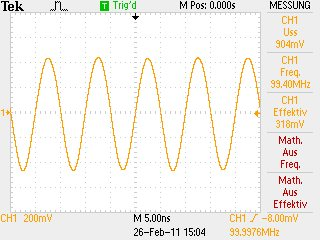

Select the desired calibration frequency in the field Cal. freq.
Connect a scope together with a 50Ohm terminator to the DUT connector. Be sure to connect the T-connector to the scope to get correct readings.

The image on the scope should like this:

Enter the measured Uss voltage into the field Measured Uss:
Enter the attenuation of the desired pad into the field Cal.Attenuator:
Connect a cable between DUT and DET connector

Press the Loop-Button
Connect the attenuator pad together with the loopcable between the DUT and DET connector.

Press the Atten.-Button
Now the OK-Button is enabled and the new calibration values are shown in Calibrated fields
Press the OK-Button to use the new calibration values and close the dialog.
Press the Cancel-Button to keep the initial calibration values and close the dialog.